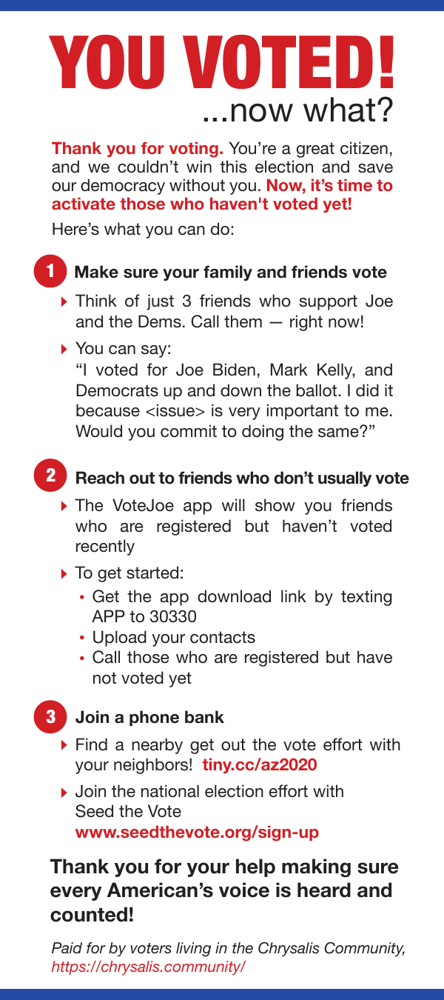
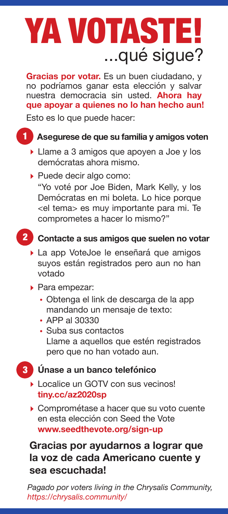

This flyer was created to convert voters who've already voted into volunteers. The content was a collaboration between Igor from Chrysalis and Anna Maria and Autumn with 30Friends. The rest of Chrysalis provided lots of content feedback.
The final design was created by Mike Cibene, who also provided the Spanish-language translation.
This flyer is copyrighted, but you may use or modify it in any way, provided you use it for GOTV for Democrat or progressive candidates. Contact us at
chrysalis.activismat moomers.org to request the original files/fonts.  